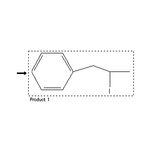

|  |
| FA | RX(1); FLST(1); RX(1) |
Reaction (1 of 1)
| Reaction ID | 7173568 |
| Product BRN | 1931248 |
| Product | (2-iodo-propyl)-benzene |
| No. of Reaction Details | 1 |
Reaction Details (1 of 1)
| Reaction Classification | Preparation (half reaction) |
| Citation Pointer | 4316754; Journal; Schachgel'diew; AZKZAU; Azerb.Khim.Zh.; 1; 1968; 40; Chem.Abstr.; 70; 11235; 1969;5258383; Journal; Magerramow et al.; UAKKAU; Uch.Zap.Azerb.Gos.Univ.Ser.Khim.Nauk; 1; 1973; 49,50,51; Chem.Abstr.; 81; 151674;4393346; Journal; Laurent et al.; TETRAB; Tetrahedron; 30; 1974; 3423,3424; |
Reference (1 of 3)
| Citation Number | 4316754 |
| Document Type | Journal |
| Authors | Schachgel'diew |
| CODEN | AZKZAU |
| Journal Title | Azerb.Khim.Zh. |
| Journal/Review Without CODEN | Chem.Abstr. |
| (Series) Volume | 1; 70 |
| Number | 11235 |
| Publication Year | 1968; 1969 |
| Page | 40 |
Reference (2 of 3)
| Citation Number | 4393346 |
| Document Type | Journal |
| Authors | Laurent et al. |
| CODEN | TETRAB |
| Journal Title | Tetrahedron |
| (Series) Volume | 30 |
| Publication Year | 1974 |
| Page | 3423,3424 |
Reference (3 of 3)
| Citation Number | 5258383 |
| Document Type | Journal |
| Authors | Magerramow et al. |
| CODEN | UAKKAU |
| Journal Title | Uch.Zap.Azerb.Gos.Univ.Ser.Khim.Nauk |
| Journal/Review Without CODEN | Chem.Abstr. |
| (Series) Volume | 1; 81 |
| Number | 151674 |
| Publication Year | 1973 |
| Page | 49,50,51 |